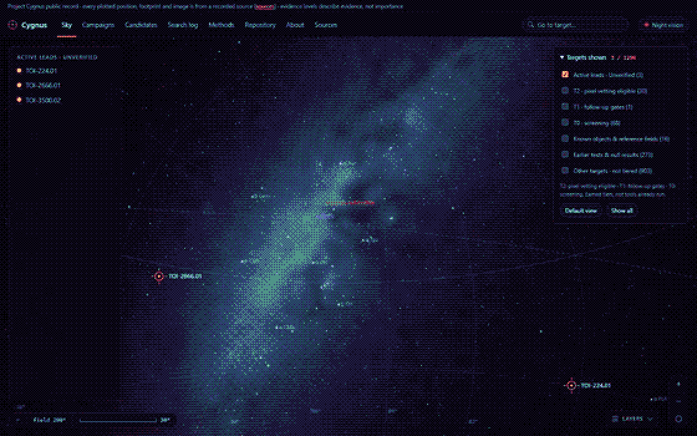
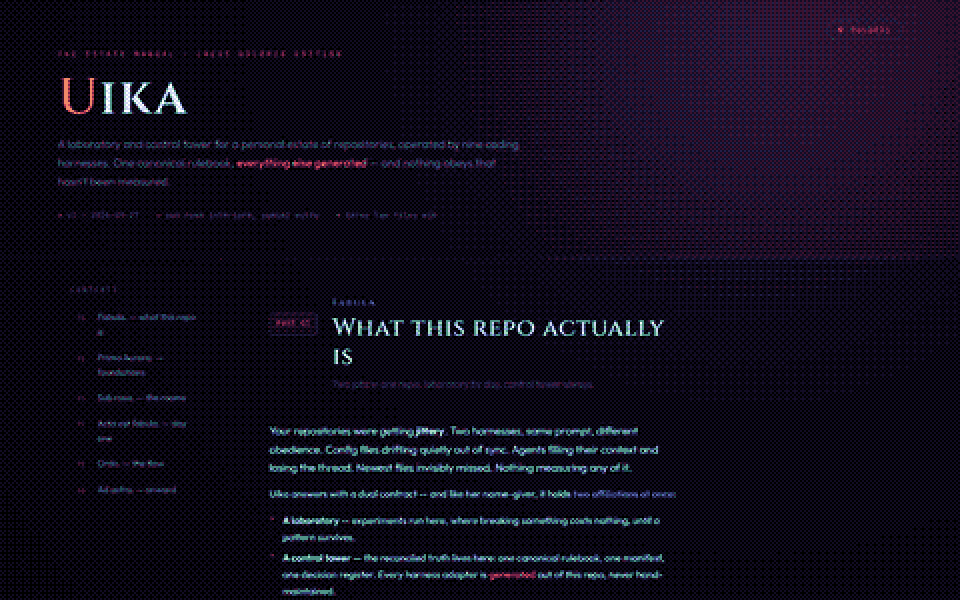
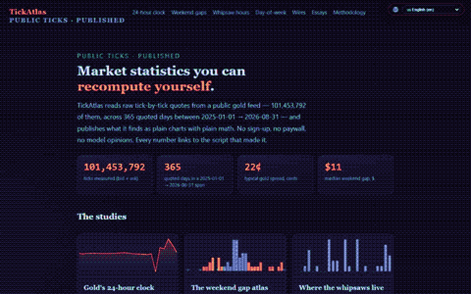
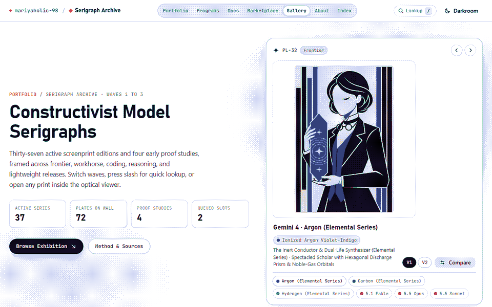

Method
Read what each study measured and where its limits sit.
Portfolio
Browse astronomy, developer tools, market research, and a music UI. Each entry states its current status.
Download programs on Programs. Open games in Marketplace.
Astronomy · Ad Astra / Cygnus
Search public sky archives for signals that standard pipelines miss. Test competing explanations before logging a lead.

Tools · Uika
Coordinate coding tools across repos from one written specification.
Published on npm as @mariyaholic/uika; still a preview. The image shows the manual, not the tool. Read the Uika guide.

Research · Argonaut Oak / TickAtlas
Turn market studies into pages you can recompute. Pages report past observations and promise nothing about future results.
Open TickAtlas
Read what each study measured and where its limits sit.
Read eight essays on failed ideas.
Treat past data as a record, not a live signal or financial advice.
Check the math yourself instead of copying a conclusion.
Music · Aria
Listen to music in a quiet dark interface.
Archive · Serigraph Wall
View thirty-seven AI model series across three waves and four early studies. Toggle Daylight Ivory or Darkroom Ink, press slash to look up a plate, or compare dual editions side by side.

Also